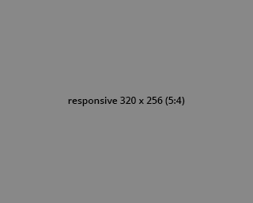
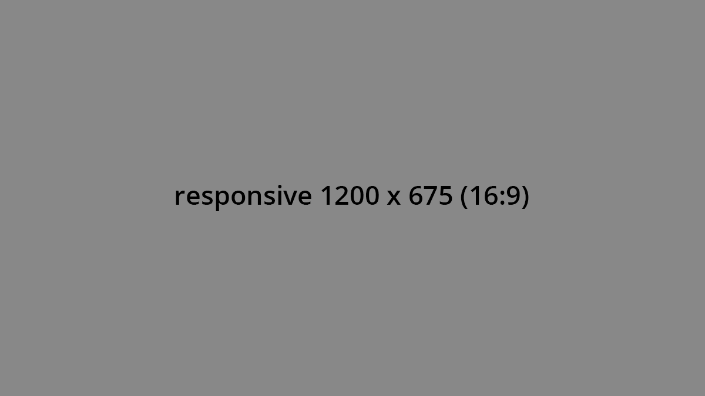

<!-- Kontaktformular -->

<form action="mail.php" method="post" id="formular" accept-charset="UTF-8">

    <input required="required" type="text" id="form-name" name="submitted[name]" placeholder="Vorname und Name" size="60" maxlength="64" pattern="[A-Za-z ]{1,64}" class="form-item form-text" autocapitalize="sentences"/>
    <label class="label" for="form-name">Ihr Name</label>

    <input required="required" type="email" id="form-email" name="submitted[email]" placeholder="Ihre E-Mail-Adresse" size="60" maxlength="128" pattern="[A-Za-z0-9._%+-]+@[A-Za-z0-9.-]+\.[a-z]{2,7}$" title="Die E-Mail sollte nur aus Kleinbuchstaben bestehen." class="form-item form-text" />
    <label class="label" for="form-email">Ihre E-Mail-Adresse</label>

    <textarea required="required" type="text" id="form-message" name="submitted[message]" placeholder="Mein Anliegen" rows="10" cols="50" autocapitalize="sentences" class="form-item form-text form-textarea"></textarea>
    <label class="label" for="form-message">Ihre Nachricht</label>

    <input class="fax-only" type="checkbox" name="submitted[contact_me_by_fax_only]" value="0" tabindex="-1" autocomplete="false" id="form-fax"><label class="label fax-only" for="form-fax">Fax</label>

    <div class="form-type-checkbox">

        <label class="option checkbox" for="form-datenschutz">
            <input type="checkbox" name="submitted[datenschutz]" id="form-datenschutz" value="0" class="form-item form-checkbox" required="required" />
            <span></span>
            <div class="labeltext">Ja, ich habe die <a href="datenschutz.html">Datenschutzerklärung</a> zur Kenntnis genommen und bin damit einverstanden, dass meine Angaben zweckgebunden zur Beantwortung meiner Anfrage erhoben und verarbeitet werden. Die Einwilligung kann ich jederzeit widerrufen.</div>
        </label>
    </div>

    <input class="form-submit button" type="submit" name="op" value="Senden"/>
</form>


<!-- Responsives Bild -->




<!-- Responsives Bild mit Auflösung -->


<!-- Picture-Element  -->

<picture>
    <source media="(min-width: 38em)" srcset="art-direction-horizontal.jpg">
    <source srcset="art-direction-vertical.jpg">
    
</picture>

<picture>
    <source media="(min-width: 1201px)" srcset="images/vorlagen/responsive_16-9_1920.png">
    <source media="(min-width: 1081px)" srcset="images/vorlagen/responsive_16-9_1200.png">
    <source media="(min-width: 993px)" srcset="images/vorlagen/responsive_16-9_1080.png">
    <source media="(min-width: 769px)" srcset="images/vorlagen/responsive_5-4_992.png">
    <source media="(min-width: 481px)" srcset="images/vorlagen/responsive_5-4_768.png">
    <source media="(min-width: 321px)" srcset="images/vorlagen/responsive_5-4_480.png">
    <source srcset="images/vorlagen/responsive_5-4_320.png">
    
</picture>

<!-- Picture-Element mit Auflösung -->

<picture>
    <source media="(min-width: 56.25em)" srcset="large.jpg 1x, large@2x.jpg 2x">
    <source media="(min-width: 37.5em)" srcset="medium.jpg 1x, medium@2x.jpg 2x">
    <source srcset="small.jpg 1x, small@2x.jpg 2x">
    
</picture>

<!-- Picture-Element mit WebP -->
<!-- https://developers.google.com/speed/webp/docs/cwebp -->
<!-- for file in *.jpg ; do cwebp -preset "photo" -mt -short "$file" -o "${file%.jpg}.webp"; done -->
<!-- Shell-Script in open  /usr/local/bin/makewebp  -->
<picture>
    <source media="(min-width: 56.25em)" srcset="large.webp" type="image/webp">
    <source media="(min-width: 56.25em)" srcset="large.jpg">

    <source media="(min-width: 37.5em)" srcset="medium.webp" type="image/webp">
    <source media="(min-width: 37.5em)" srcset="medium.jpg">

    <source srcset="small.webp" type="image/webp">
    <source srcset="small.jpg">
    
  </picture>


<!-- Inline SVG-Element: -->
<!-- https://yoksel.github.io/url-encoder/ -->


<!-- LazyLoad Images: -->


<!-- Preload Images -->
<link rel="preload" as="image" href="image.jpg">
<link rel="preload" as="image" href="image.jpg" imagesrcset="wolf_400px.jpg 400w, wolf_800px.jpg 800w, wolf_1600px.jpg 1600w" imagesizes="50vw">
